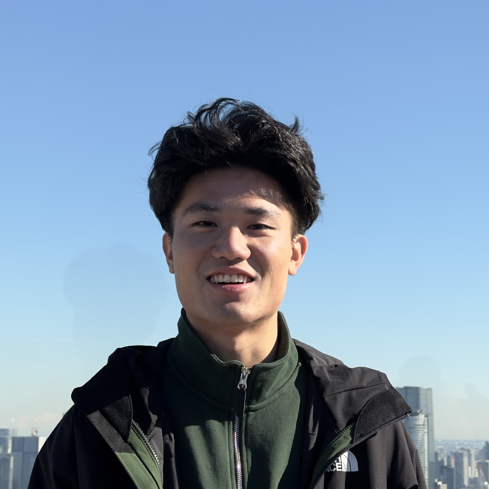
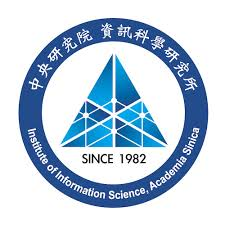
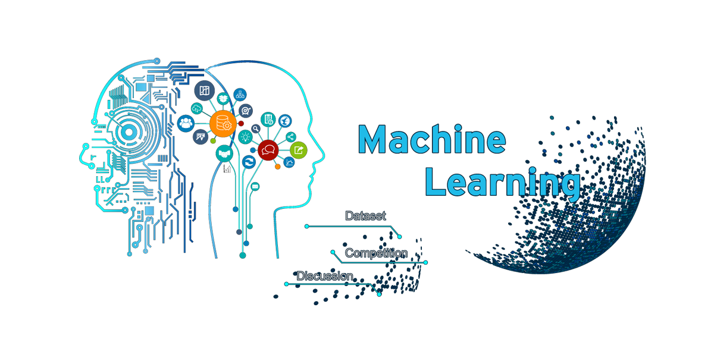
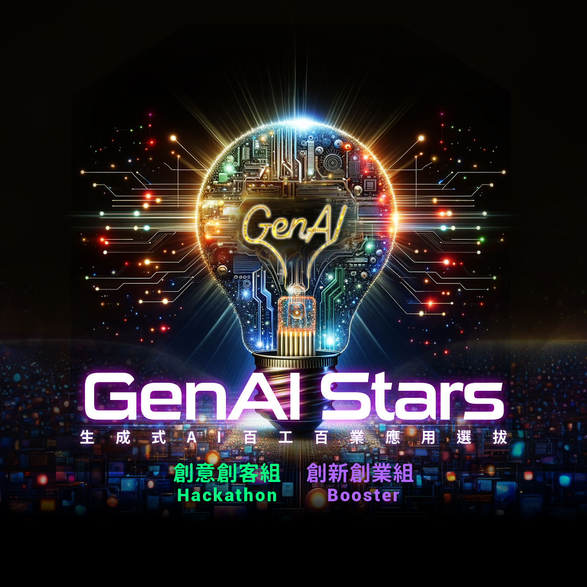

|
MAO CHI HE (Matthew) Hi, I’m Mao-Chi He, a graduate of the Interdisciplinary Program of Engineering at National Tsing Hua University, where I studied both Mechanical Engineering and Computer Science. During my senior year, I joined the University of California, Berkeley as an exchange student in the Department of Computer Science, further strengthening my background in AI, software development, and computational thinking. I have always been fascinated by robotics and artificial intelligence, especially their potential to solve real-world problems and improve people’s daily lives. Through my internship and research experiences, I have gained hands-on experience in implementing the latest AI technologies and applying them to practical robotic systems. These experiences have also helped me identify meaningful challenges in the robotics field and motivated me to develop solutions that bridge AI, software, and physical systems. |
 |
{kind=link}
Education |

|
University of California, Berkeley
Aug 2024 - May 2025
Exchange Student, Computer Science Department
|

|
National Tsing Hua University (Taiwan)
Aug 2021 - May 2024
B.S., Interdisciplinary Program of Engineering (CS + MechE)
|
Experience |

|
Microsoft
Sep 2025 - Mar 2026
Research & Development Intern @ MAI-A Ads Taipei, Taiwan
|
|
 |
Institute of Information Science, Academia Sinica
Jul 2025 - Mar 2026
Research Assistant Taipei, Taiwan
|
|
|
CVLab, National Tsing Hua University
Jan 2025 - Dec 2025
Undergrad Research Assistant Hsinchu, Taiwan
|
|
|
CNELAB, National Tsing Hua University
Aug 2023 - Dec 2024
Undergrad Research Assistant Hsinchu, Taiwan
|
Publications |
|
Patterson Hsieh, Chia-Jui Yeh*, Mao-Chi He, Wen-Han Hsieh, Elvis Hsieh†. "Seg the HAB: Language-Guided Geospatial Algae Bloom Reasoning and Segmentation." NeurIPS 2025 Workshop on Tackling Climate Change with Machine Learning, 2025. [Paper] |
Projects |

AI Agent Project
Jan 2025 - Present
Developer (Berkeley, CA)

AI Cup Hackathon
Oct 2024 - Nov 2024
Participant (7th/487 teams) - Taiwan

GenAI Stars Hackathon
May 2024 - Jul 2024
Participant (Semifinalist & Merit Award) - Taiwan
|